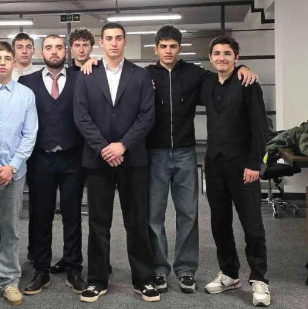
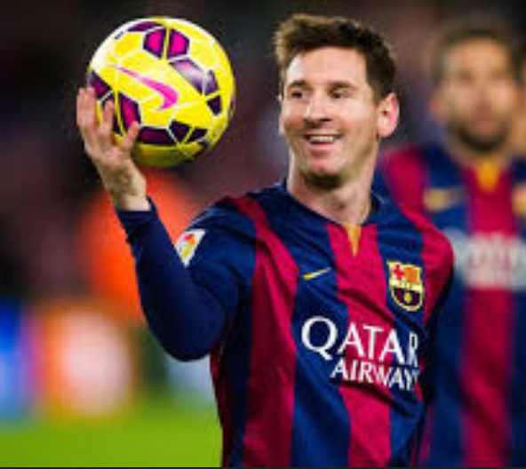
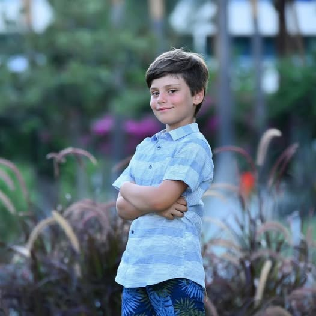
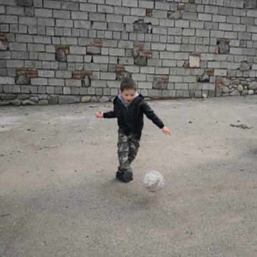

Serving as a mentor at Goal Oriented Academy (GOA) has been a deeply rewarding and transformative experience. As a GOA mentor, I’ve had the privilege of guiding students through their journeys of growth, helping them set and achieve personal and academic goals. This role has allowed me to foster skills like self-discipline, resilience, and goal-setting among my mentees while encouraging them to take ownership of their learning.
One of the most fulfilling aspects of this journey has been witnessing the students’ progress—seeing their confidence grow as they tackle challenges and celebrate achievements. Each session is a blend of reflection, strategy, and encouragement, creating an environment where students feel empowered to excel.
Beyond supporting my mentees, the role has enriched me personally. I’ve honed my communication and leadership skills while building meaningful connections. Being a GOA mentor is more than a role—it’s an opportunity to inspire and be inspired.

Ilia Dzindzibadze
‎ ‎ My experience as a GOA leader
As the leader of Goal Oriented Academy, I believe that true leadership is not about managing tasks or overseeing day-to-day operations—it's about inspiring others, creating opportunities, and helping individuals reach their highest potential. Every day, I am reminded of how powerful education can be, and how essential it is to guide our students in ways that empower them to achieve their dreams, both academically and personally.
When I think about the future of Goal Oriented Academy, I see a community where every individual—whether student or faculty—has the resources and encouragement they need to achieve their goals. Education is not a one-size-fits-all journey. Every student has unique aspirations, and as a leader, my role is to ensure we tailor our approach to each of them.
One of my primary goals is to foster an environment where personalized learning thrives. I believe in setting clear, actionable objectives that inspire both students and faculty to push their limits, explore new ideas, and challenge themselves. Through this, our students are not just prepared for academic success but also equipped with the mindset needed to navigate life beyond the classroom.
As a Barcelona fan, I’ve experienced the highs and lows of this magnificent club. The rollercoaster of emotions is a part of being a supporter of such a historic team, but it's the unwavering belief in the club’s greatness that keeps us going.
When you think of FC Barcelona, the first thing that often comes to mind is their incredible style of play: tiki-taka. It‚Äôs a beautiful, fluid game that has captured the imagination of millions around the world. As a fan, I am incredibly proud of the club's commitment to playing football the ‚ÄúBarcelona way‚Äù‚Äîpossession-based, attacking football that emphasizes teamwork, precision, and technical ability. Visca Bar√ßa! ‚ú®üíô‚ù§Ô∏è
Salome Zurabishvili
‎ ‎ My experience as the President of Georgia
As I reflect on my time as the President of Georgia, I am filled with gratitude, humility, and a deep sense of responsibility for the journey that has shaped both my own life and the future of our beloved country. My presidency has been a period of immense personal growth, transformation, and, above all, a commitment to upholding the values of democracy, unity, and the rule of law for the people of Georgia.
When I first took office, I knew the weight of the responsibility I was assuming. Leading a nation is never an easy task, especially one as dynamic and rich in history as Georgia. But it was with the utmost determination to serve, the love for my people, and the belief in Georgia’s bright future that I embarked on this incredible journey.
One of the most defining aspects of my presidency was navigating Georgia’s position on the world stage, balancing tradition with the need for modernization. From the outset, I have been committed to ensuring that Georgia remains firmly anchored in the European and Euro-Atlantic family. My presidency has coincided with a period of intense global challenges, but I have remained steadfast in my belief that Georgia’s future lies in strengthening ties with the European Union, NATO, and other international organizations that promote peace, security, and prosperity.

Lionel Messi
‎ ‎ My experience as a Barcelona player
Looking back on my time at FC Barcelona, it’s hard to put into words all the emotions I’ve experienced. From the very first day I arrived at La Masia, I knew that Barcelona was a place where I could grow, not just as a footballer, but as a person. Over the years, the club became my second family, and it’s hard to imagine my life without the incredible experiences and memories I’ve made here.
Being a Barcelona player was not just about playing football; it was about being part of something much bigger than myself. It was about representing a club that stands for excellence, passion, and a commitment to playing the game in the most beautiful way possible. I am so proud to have worn the Blaugrana shirt for so many years, and to have been part of a team that has made history both in Spain and on the world stage.
When I first walked through the doors of Goal Oriented Academy, I didn’t quite know what to expect. Like most students, I had my goals—some clear, some still forming—but I wasn’t sure how I would get there. All I knew was that I was ready for a new chapter, a place where I could push myself to grow, learn, and achieve the things I had always dreamed about.
Looking back now, I realize that choosing Goal Oriented Academy was one of the best decisions I’ve ever made. This school isn’t just a place to earn a diploma—it’s a place where students are truly prepared to succeed in life, not just in academics but in every aspect of their personal and professional journeys. It’s a place that teaches you not only how to achieve your goals, but how to dream bigger, aim higher, and work smarter.
One of the most valuable things I’ve learned at this Academy is that success is not a destination—it’s a journey. It’s about setting goals, staying focused, and continually evolving along the way. With the support of my mentors, teachers, and fellow students, I know that I am on the right path.
To anyone considering joining Goal Oriented Academy, I say this: If you are ready to challenge yourself, to grow, and to take control of your future, this is the place for you. The journey may not always be easy, but it will be worth it. Here, you will not only achieve your goals—you will exceed them.

Mika Mesxishvili
‎ ‎ My experience as a GOA student
When I first enrolled in Goal Oriented Academy, I had high expectations. I had heard a lot about the school’s focus on helping students achieve their goals, develop personal growth, and provide a path to success. I thought I had found the right place to support my ambitions and guide me toward the future I wanted. However, my experience has not been what I expected, and looking back, I realize I’ve encountered more frustrations than fulfillment.
One of the first things I noticed at Goal Oriented Academy was the intense pressure to constantly set and meet personal goals. While the idea of goal-setting is important, the overwhelming focus on it made me feel as though I was never doing enough. Every week, we were encouraged to break down our personal and academic goals into smaller tasks, which, on paper, sounds like a helpful approach. But in practice, it often felt like an endless cycle of expectations that only led to more stress.
The pressure to always be achieving something—whether it was acing an exam, completing a project, or hitting a personal growth target—became exhausting. Instead of feeling motivated, I often felt anxious and burnt out. The idea of celebrating small victories seemed hollow when I was constantly moving from one goal to the next without really feeling a sense of accomplishment.

Giorgi Uridia
‎ ‎ My experience as a football fan
As a football fan, there’s no feeling quite like it—the adrenaline, the tension, the excitement, and the heartbreak all wrapped into 90 minutes (or more) of pure emotion. For many of us, football is more than just a game. It’s a way of life. It’s about the community, the memories, the triumphs, and yes, even the losses. Football has a way of capturing your heart and not letting go, no matter how many ups and downs you experience along the way.
Being a football fan isn’t always about cheering for your team when they’re winning. It’s about standing by them through the hard times, the tough seasons, the disappointing losses. It’s about the unwavering belief that your team will always rise again, no matter how impossible it seems. But it’s also about celebrating the victories, both big and small—the moments when everything aligns, and your team delivers something magical.
Matchdays are something truly special. From the moment you wake up to the final whistle, there’s an energy that you can’t quite describe. The anticipation builds as the hours tick by, the excitement growing with every passing minute until you step into the stadium or settle into your favorite spot at home. There’s something about wearing the team colors, shouting the chants, and feeling that sense of togetherness with fellow fans that creates an unbreakable bond.